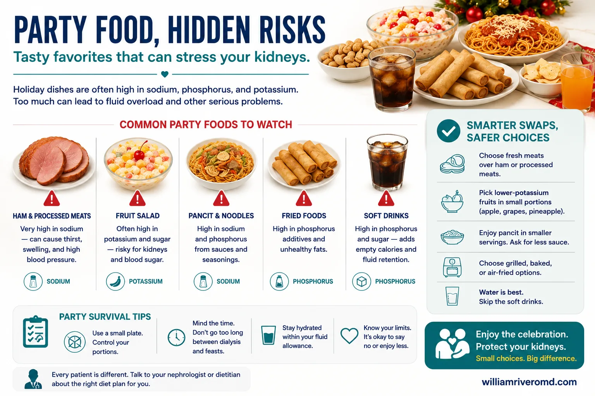
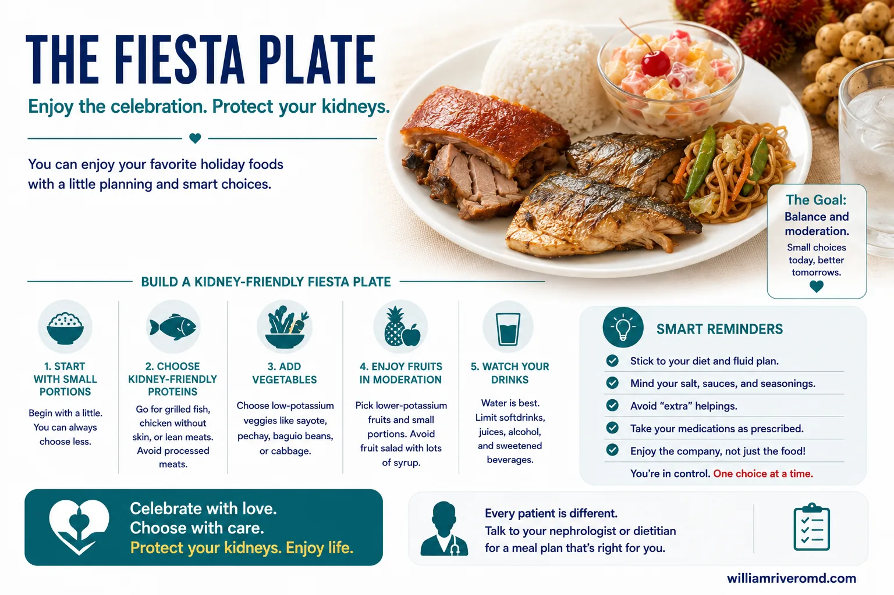
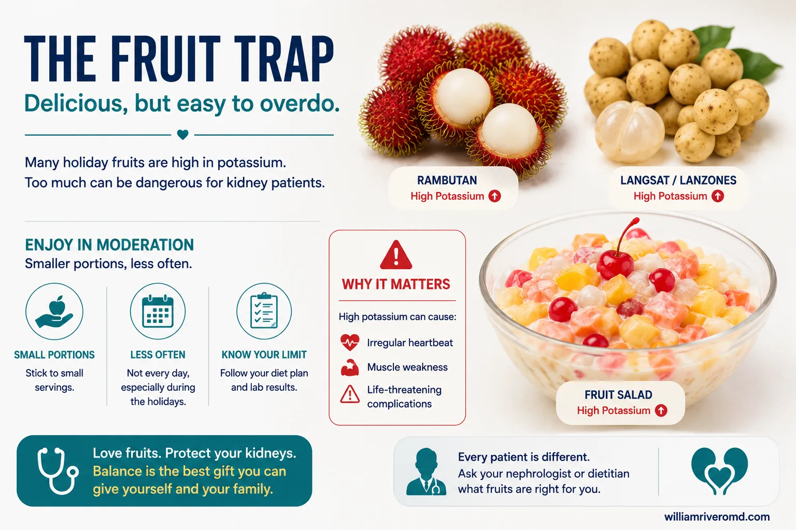
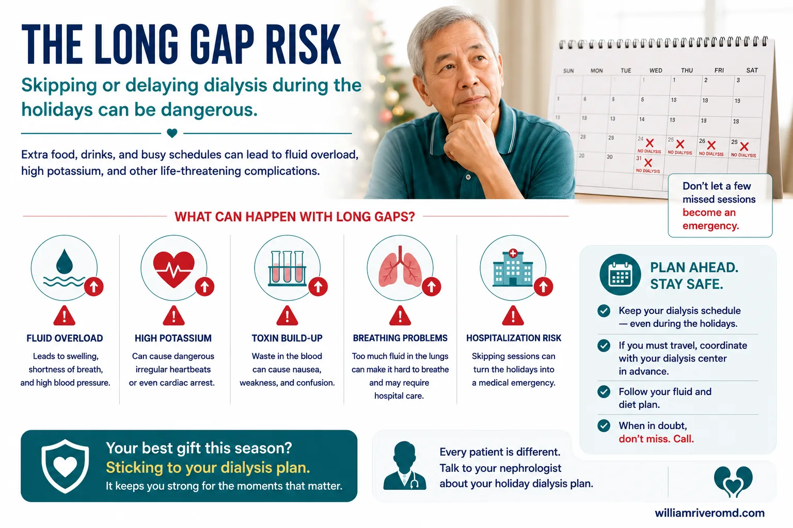

| Surviving Fiestas & Holidays with CKD · williamriveromd.com | W.G.M. Rivero MD · FPCP · DPSN · · 2026 |
|
Patient Education · CKD & Dialysis
Holiday Kidney Syndrome
Surviving Filipino fiestas, Christmas, New Year, and Holy Week with CKD and dialysis — the complete guide to eating, planning, and staying out of the ER during the most dangerous time of year for kidney patients.
|
🎉
W.G.M. Rivero MD
FPCP · DPSN Nephrologist
williamriveromd.com
|
#1 Cause HD Hospitalization Dec–Jan |
Hyperkalemia Most Common ER Diagnosis |
Lechon Highest-Risk Holiday Food |
Plan Ahead The Only Solution |
"Holiday Kidney Syndrome" refers to the well-documented spike in CKD and dialysis-related hospitalizations during the Philippine Christmas season (November–January), Holy Week, and fiesta season. The pattern is consistent across nephrology centers: emergency admissions rise sharply after major celebrations, driven by a cluster of predictable causes that all converge at the same time.
The four drivers are: (1) dietary indiscretion — feast foods extremely high in potassium, phosphorus, and sodium (lechon, kare-kare with bagoong, alcohol, desserts loaded with condensed milk and fruit); (2) missed dialysis sessions — centers close for 2–4 days during Christmas and New Year, leaving patients without their scheduled clearance; (3) alcohol intake — raises uric acid, dehydrates, and impairs judgment about food choices; and (4) dehydration from heat and alcohol — especially during April Holy Week, when outdoor temperatures accelerate fluid and solute accumulation between sessions.
🎄 Christmas / New Year
(Dec 24 – Jan 2) Longest holiday dialysis gap (centers close 2–4 days). Highest lechon, kare-kare, and alcohol exposure. Noche Buena and Media Noche create back-to-back feast events. Patients on MWF or TThSa schedules may face a 72-hour gap if Dec 25 or Jan 1 falls on their scheduled day.
|
🏖️ Holy Week (Lent)
(Maundy Thursday – Easter) Extreme seafood excess — dried fish (tuyo, danggit, daing) and salted fish are among the highest-phosphorus and highest-sodium foods in the Filipino diet. Hot April weather accelerates dehydration. Many patients and their families travel, disrupting the dialysis schedule and limiting food choices.
|
🎊 Town Fiesta
(Patron saint's feast day) Lechon is almost universal. Kare-kare with bagoong, alcohol, and buko-pandan are standard. Intense community and family pressure to eat everything offered — refusing food at a fiesta is culturally uncomfortable. The festive atmosphere makes it easier to rationalize "one time lang" decisions that have life-threatening consequences.
|
The key is planning BEFORE the event — knowing your dialysis schedule, packing your medications, and having a "party survival script" ready before you sit down at the table. Most hospitalizations happen to patients who had no plan. The food was the same, the schedule was the same — the only difference was whether the patient had thought about it ahead of time.
| For educational use only. This guide does not replace individualized advice from your nephrologist. References: KDIGO 2024 · Philippine Society of Nephrology · williamriveromd.com/guides/surviving-fiestas-holidays-ckd | williamriveromd.com Page 1 of 10 |
| Surviving Fiestas & Holidays with CKD · williamriveromd.com | W.G.M. Rivero MD · FPCP · DPSN · 2026 |

| For educational use only · Not a substitute for individualized medical advice · williamriveromd.com | williamriveromd.com Page 2 of 10 |
The CKD Fiesta Plate · Safe & Dangerous Holiday Foods How to eat at a Filipino celebration with CKD or dialysis |
Page 3 of 10 · williamriveromd.com |
|
✓ SAFE ZONE — Fill ½ Your Plate
|
⚠ SMALL AMOUNT ONLY — ¼ Plate Max
|
⛔ AVOID COMPLETELY
|
| Food | Serving | Sodium | K+ | Phos | CKD Verdict |
|---|---|---|---|---|---|
| Lechon (100 g, no skin) | 1 slice | 390 mg | 290 mg | 195 mg | ⚠️ Limit — 1 small piece only |
| Lechon skin (crackling) | 30 g | 500 mg | 100 mg | 280 mg | ⛔ Avoid — high phosphorus |
| Kare-kare sauce (no bagoong) | 2 tbsp | 180 mg | 50 mg | 30 mg | ✓ Small amount OK |
| Bagoong alamang | 2 tbsp | 2,400 mg | 80 mg | 40 mg | ⛔ Avoid — extreme sodium |
| Crispy pata (100 g) | 1 serving | 800 mg | 380 mg | 250 mg | ⛔ Avoid |
| Pancit canton (1 cup) | 1 serving | 1,200 mg | 180 mg | 120 mg | ⛔ Avoid — very high sodium |
| Plain white rice (kanin) | 1 cup | 0 mg | 55 mg | 68 mg | ✓ Safe — your calorie base |
| Buko pandan (½ cup) | ½ cup | 50 mg | 350 mg | 80 mg | ⛔ Avoid — hidden K+ bomb |
| Fruit salad (condensed milk) | ½ cup | 60 mg | 400+ mg | 90 mg | ⛔ Avoid — extreme K+ |
| Beer (1 bottle, 330 mL) | 1 bottle | 25 mg | 90 mg | 50 mg | ⛔ Avoid — raises uric acid! |
| Buko water (1 cup) | 240 mL | 10 mg | 600 mg | 20 mg | ⛔ Avoid — highest K+ of all |
| Grilled isda, no sauce | 1 medium | 120 mg | 310 mg | 180 mg | ⚠️ 1 small piece only |
| FNRI Philippine Food Composition Tables 2023 · KDIGO CKD Guidelines 2024 · Educational use only. | williamriveromd.com · Page 3 of 10 |
| Surviving Fiestas & Holidays with CKD · williamriveromd.com | W.G.M. Rivero MD · FPCP · DPSN · 2026 |

| For educational use only · Not a substitute for individualized medical advice · williamriveromd.com | williamriveromd.com Page 4 of 10 |
The Fruit Trap · Alcohol Warning · Long Holiday Dialysis Gap Three hidden dangers that send patients to the ER after every major Filipino holiday |
Page 5 of 10 · williamriveromd.com |
Fruits that are healthy for normal people are potassium bombs for dialysis patients. The fruit platter at every Filipino party — watermelon, ripe mango, melon, grapes — is one of the biggest holiday kidney syndrome triggers. The word "masustansya" (nutritious) does not apply the same way when your kidneys cannot excrete potassium.
| Fruit | Serving | K+ Content | CKD Verdict |
|---|---|---|---|
| Watermelon (pakwan) | 2 slices (200 g) | 320 mg | ⛔ High K+ — avoid |
| Melon / cantaloupe | ½ cup | 270 mg | ⛔ Moderate-high — avoid |
| Ripe mango (1 medium) | 1 piece | 320 mg | ⛔ High K+ — avoid |
| Papaya (½ cup) | ½ cup | 180 mg | ⚠️ Small amount only |
| Pineapple / pinya (½ cup) | ½ cup | 120 mg | ⚠️ Moderate — limit 1 serving |
| Apple (1 small) | 1 piece | 150 mg | ⚠️ Moderate |
| Grapes (½ cup) | ½ cup | 140 mg | ⚠️ Small amount only |
| Canned fruit in juice (drained) | ½ cup | 80 mg | ✓ Safer option — drain thoroughly |
Why alcohol harms CKD patients: (1) raises uric acid → gout flare risk; (2) causes dehydration → worsens uremia; (3) interacts with BP medications and immunosuppressants; (4) disrupts dialysis fluid balance; (5) impairs judgment about food choices at the party — one beer often leads to "one time lang" decisions for lechon and bagoong.
For transplant patients on tacrolimus or cyclosporine: even 1 drink can raise drug levels dangerously. Do not drink at all.
The Christmas problem: dialysis centers often close December 25–26 and January 1 — creating a 48–72 hour gap for patients whose scheduled sessions fall on those days. This is the most dangerous period of the year for HD patients.
| Gap Day | Required Actions | Watch For |
|---|---|---|
| Day 1 of gap | Restrict fluids to 500 mL (above urine output if still making urine). Eat low-K+ diet: rice, cassava, egg, small fish. Weigh yourself morning and evening. Take all your medications. | Weight gain >0.5 kg/day = fluid overload building |
| Day 2 of gap | Same fluid and diet restrictions. Double-check K+ intake — no fruit, no buko water, no processed food. Call your center's on-call nurse if you have any symptoms. | Ankle swelling, shortness of breath, palpitations, muscle weakness |
| Day 3+ of gap | Seek emergency dialysis. Do not wait. Contact your center's emergency line or go to the nearest hospital with an HD unit. | Any symptom = ER. Do not "wait and see." |
| KDIGO 2024 · Philippine Society of Nephrology · Educational use only. Always contact your nephrologist for individualized guidance. | williamriveromd.com · Page 5 of 10 |
| Surviving Fiestas & Holidays with CKD · williamriveromd.com | W.G.M. Rivero MD · FPCP · DPSN · 2026 |

| For educational use only · Not a substitute for individualized medical advice · williamriveromd.com | williamriveromd.com Page 6 of 10 |
| Surviving Fiestas & Holidays with CKD · williamriveromd.com | W.G.M. Rivero MD · FPCP · DPSN · 2026 |

| For educational use only · Not a substitute for individualized medical advice · williamriveromd.com | williamriveromd.com Page 7 of 10 |
Party Survival Script · Emergency Signs · Key Takeaways The 5-step plan for surviving any Filipino celebration with CKD — and what to do if something goes wrong |
Page 8–10 of 10 · williamriveromd.com |
①
ARRIVE WITH A PLAN
Know your food limits before you go. Eat a small low-K+ snack at home first — plain rice + egg — so you are not ravenous at the party. Never arrive hungry.
|
②
SURVEY THE TABLE FIRST
Before sitting down, walk the table. Identify what is safe (rice, plain vegetables, small fish) and what to skip (bagoong, alcohol, fruit platter, crispy pata).
|
③
USE THE POLITE DECLINE
"Salamat, may diet po ako — hindi maaari ang bagoong/beer. Kumakain lang ako ng kanin at gulay." Practice this phrase before the party. Most hosts will respect it.
|
④
ONE SERVING ONLY
No second helpings of anything except plain rice and leached vegetables. Fill calorie gaps with extra rice, not more protein or sauced dishes. One plate — not two.
|
⑤
KNOW YOUR EXIT
If you feel shortness of breath, palpitations, or sudden severe swelling during or after the party — go to the ER immediately. Do not wait and see.
|
| Immediate Workup | Critical Thresholds | Intervention |
|---|---|---|
| Serum K+, BUN, creatinine, CO₂ | K+ >6.0 mEq/L with ECG changes = stat dialysis | IV calcium gluconate + sodium bicarbonate bridge; arrange emergent HD |
| 12-lead ECG | Peaked T-waves, widened QRS, sine-wave pattern | Cardiac monitoring; do not delay dialysis for further workup |
| CXR — pulmonary edema assessment | SpO₂ <94% + bilateral haziness = urgent | Supplemental O₂; urgent ultrafiltration via HD |
| Point-of-care glucose, CBC | Rule out sepsis or acute exacerbation | Treat underlying cause concurrently with dialysis |
✓ Rice Is Your Friend
Plain white rice is the lowest-potassium, lowest-phosphorus staple you can eat. Fill your plate with it. It is your calorie base and your safety net. Every bite of rice is a bite you are not taking of something dangerous.
|
✓ Plan Your Schedule by November
Do not wait until December 23 to find out your center is closed on Christmas Day. Call your dialysis center by November to confirm the holiday schedule and arrange replacement sessions. Pre-planning prevents emergency dialysis.
|
✓ The 3 Biggest Killers
Bagoong (2,400 mg sodium/2 tbsp), Beer (raises uric acid + dehydrates + impairs judgment), Buko water (600 mg K+/cup). Memorize these three. Avoid only these and you dramatically reduce your holiday hospitalization risk.
|
| Reference: KDIGO 2024 · Philippine Society of Nephrology · For educational use only · This guide does not replace individualized advice from your nephrologist · williamriveromd.com · 2026 | williamriveromd.com Page 10 of 10 |